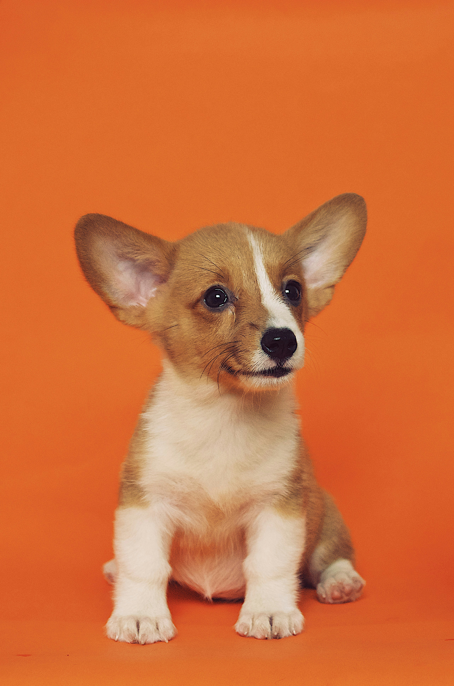
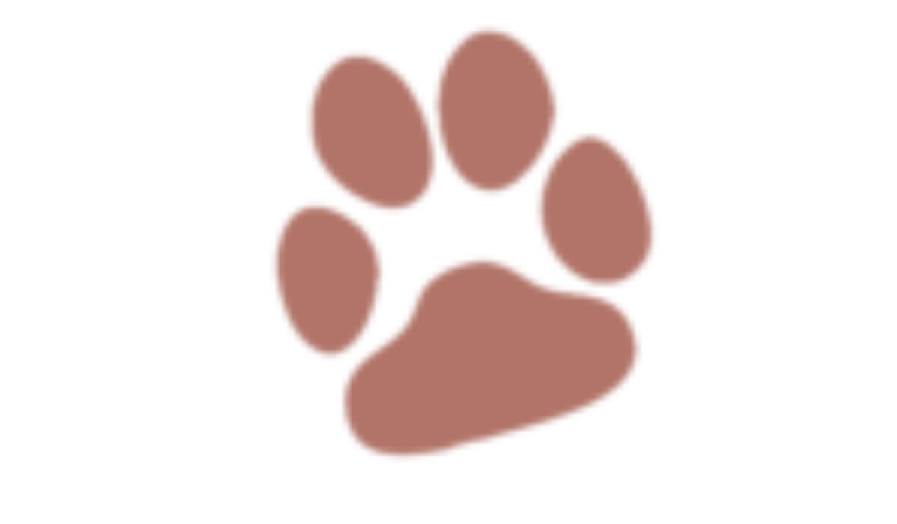
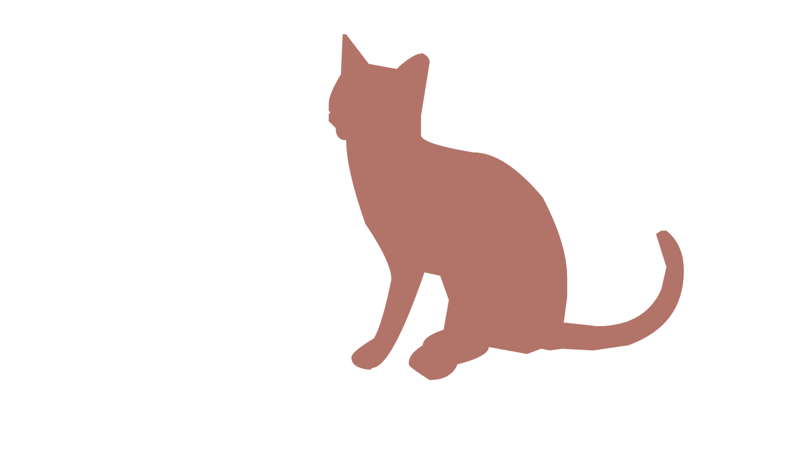
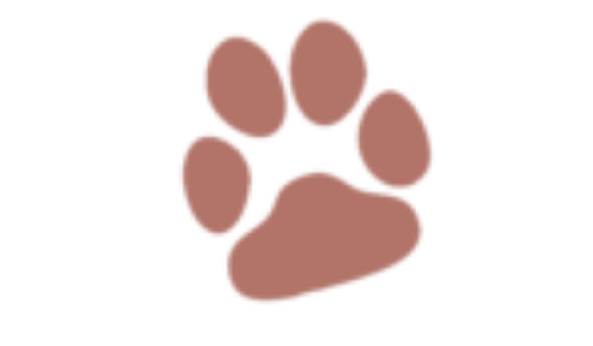
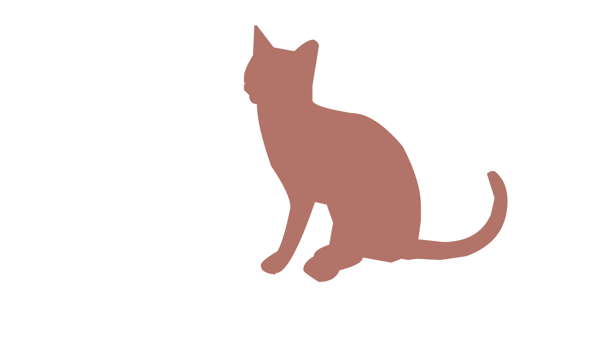

Adotar um animal de estimação é mais do que uma simples decisão de aquisição, é um ato de amor e responsabilidade. Milhões de animais abandonados em abrigos estão à espera de um lar amoroso, esperando para serem parte de uma família.
CÃES E GATOS EM BUSCA DE UMA FAMÍLIA

Item 2
Item 3
Item 4
Item 5
Item 6
QUEM SOMOS?
Estudantes desenvolvem site "Adote Mais" para promover adoção responsável de animais. O site reúne fotos e informações de animais disponíveis para adoção, facilita a busca por filtros e oferece dicas de cuidados.


 


